Immersive Studio Pro edits video for surfaces that surround an audience: fulldome domes, flat screens, and rooms whose walls and floor are all projection surfaces.
The program runs on the desktop, on Windows and macOS. All rendering happens on the GPU: clips are warped onto the dome in real time, effects run as shaders, and every visible clip is composited into one master image each frame. The viewer displays that master, the live outputs broadcast it, and the exporter records it.
A sequence works in one of three modes, chosen when it is created.
Formats mix inside one project: a dome project can contain 2D sequences, and a 2D sequence can be placed inside a dome sequence as a clip.
Interface labels appear as they read on screen: Fulldome src. Keys appear as Ctrl+E; on macOS, Ctrl means ⌘. Orange numbers on a screenshot correspond to the numbered list below it.
The interface is in English, with a Spanish translation available in the preferences.
| Windows | Windows 10 or 11, 64-bit. On hybrid-graphics laptops the program requests the discrete GPU automatically. |
| macOS | Apple Silicon. |
| Memory | 16 GB for dome work at 4096 × 4096. Decoding several layers of high-bitrate footage at once is the demanding part. |
| Disk | Local storage for media. A 4096 × 4096 export at 200 Mb/s occupies about 300 MB per minute. |
On Windows, run Immersive Studio Pro Setup 1.0.0.exe. It installs for the current user, so it requires no administrator rights, and it registers the .isp extension so that double-clicking a project opens it.
The program opens on the start screen, where a project is created. The format is chosen first, then its parameters, and a preview shows the result before the project exists.
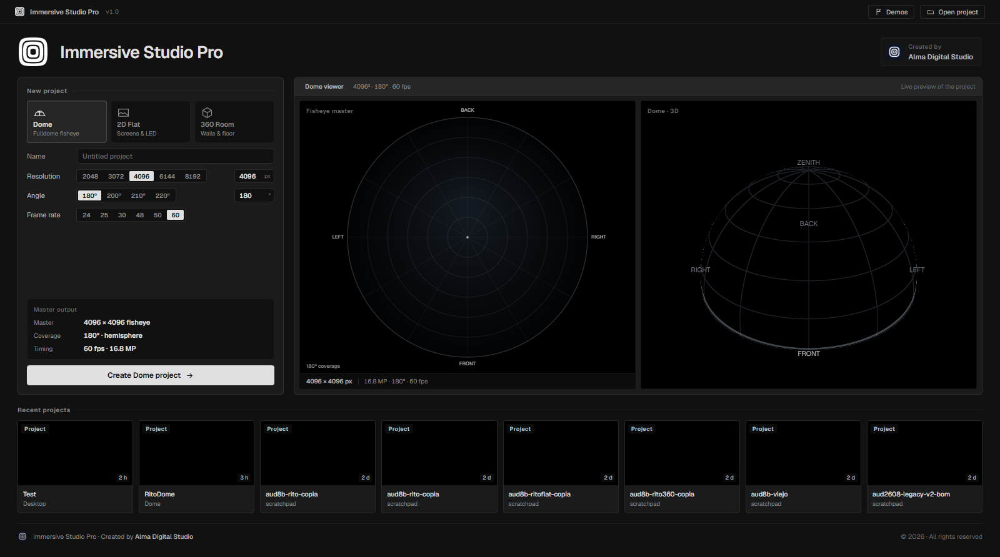
The start screen is reachable at any time from File → New project… (Ctrl+N). An open project remains open behind it, and Back to project returns to it unchanged.
Demos in the top bar builds a complete project in the chosen format — several tracks, clips, a composition, motion, an effect and automation — and runs a guided tour over it. Everything in it is editable and can be saved as a new project.
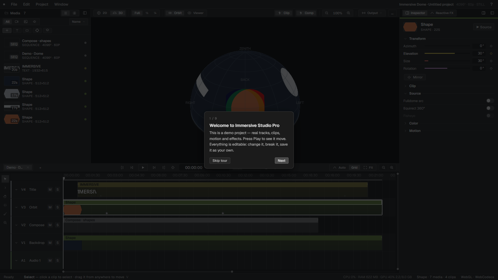
Application settings, including the interface language, are in Project → Preferences…. Settings that belong to the sequence — resolution, frame rate, dome coverage — are in Project → Sequence settings….
Five ideas describe most of the program's behaviour.
Every visible clip is drawn into a single master image each frame. The viewer shows that master, NDI and Spout broadcast it, and the exporter records it. The image on screen while editing is the image that is delivered.
In a dome sequence the master is square and the picture is the circle inscribed in it. The four corners fall outside the projected area: they are recorded as black, or as transparency when the export carries alpha.
A fulldome master is an azimuthal-equidistant fisheye. Its coverage is the field of view it represents: 180° for a hemisphere, or 200°, 210° and 220° for domes that continue below the horizon. The setting is in Project → Sequence settings… and applies everywhere at once — the warp, the guides, the 3D view and the export.
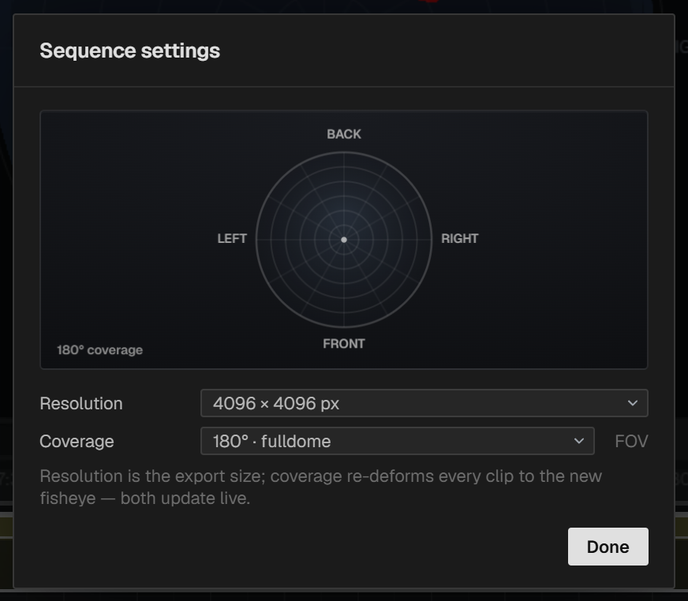
Coverage describes the venue. A master made at 180° and projected in a 210° dome is wrong at the edges, and repositioning clips does not correct it. The value comes from the dome's specification.
A clip in a dome sequence is treated in one of two ways, set by Fulldome src in the inspector.
Equirect 360° handles equirectangular 360° footage and reprojects it into the dome. Fisheye, with its Amount, bends a fulldome source further; it becomes available once Fulldome src is on.
A sequence is an item in the media panel, and an item in the media panel can be placed on a track. One mechanism therefore provides sequence tabs, nesting and generated compositions. Chapter 15 describes it.
Video, stills, audio, text, shapes, generated compositions, nested sequences and adjustment layers are all clips on tracks. They trim alike, carry the same inspector sections where those apply, and animate alike.
This walkthrough creates a dome sequence, imports footage, places it, animates it, adds a generated composition and exports a master.
Drag files onto the media panel, or press Ctrl+I. Video, stills, audio and image sequences are accepted. For heavy footage, right-click the item and choose Generate proxy; chapter 10 covers proxies.
Dragging the clip in the viewer moves the same two values.
Elevation accepts negative values, which place a clip below the horizon. In a dome with coverage above 180° that is projected area.
Open Motion in the inspector and click a preset: Orbit travels around the horizon, Float drifts slowly. A preset adds ordinary modifiers to the list, which can then be retuned, switched off or deleted one at a time.
For a movement with an exact start and end, use keyframes: place the playhead, set the value, and a keyframe is recorded. Chapter 19 covers both routes.
The composition is a nested sequence containing real clips. Double-clicking it opens its contents for editing, and its generating parameters remain in the inspector.
Projects are saved with Ctrl+S as .isp files.
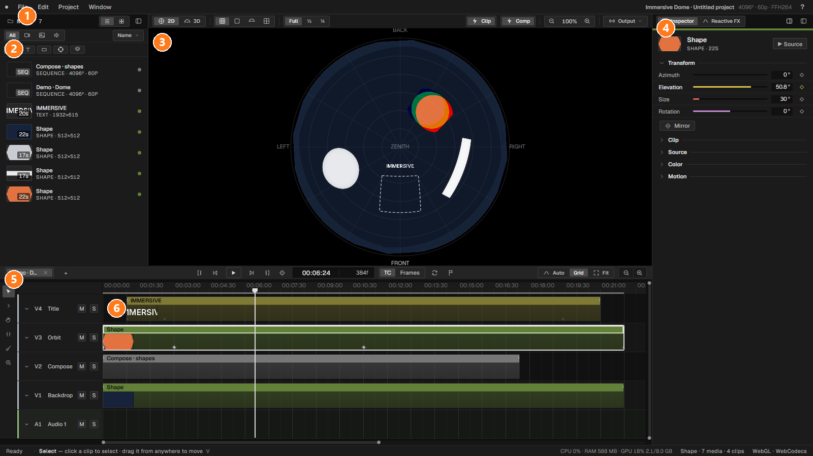
The status bar along the foot of the window describes what the active tool does, and shows CPU, memory and GPU load with the project's media and clip counts.
Dragging the gutters between panels resizes them. The media and inspector panels collapse from Window, or from the two buttons at the top right of the inspector. The timeline's height is dragged from its top edge.
Ctrl+K, F1 or ? opens a searchable list of every command with its shortcut.
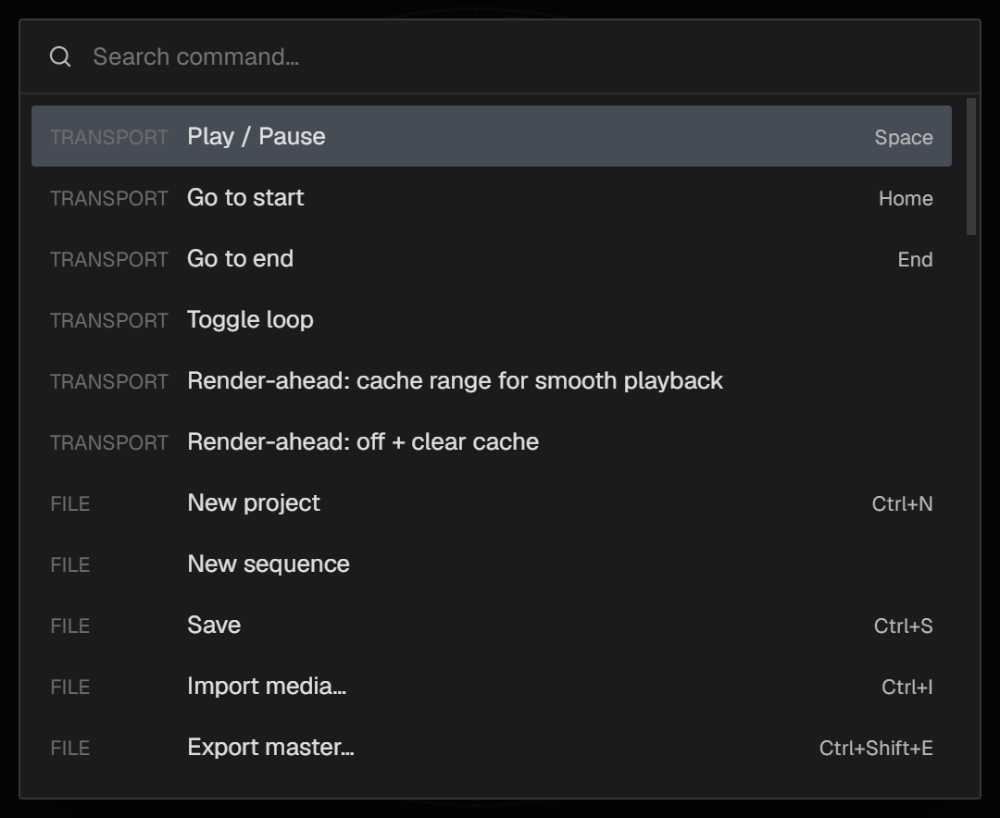
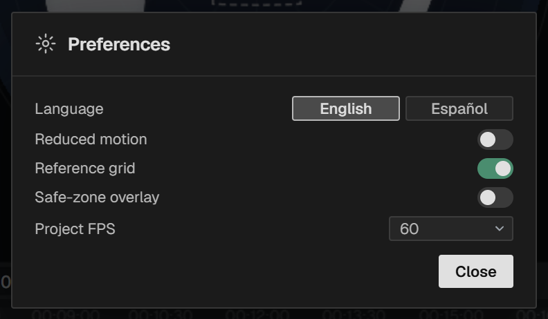
Two arrangements send the picture to a display without the interface around it, both under Window and in the Output menu above the viewer.
The media panel holds everything the project contains, including the sequences and compositions the program generates.
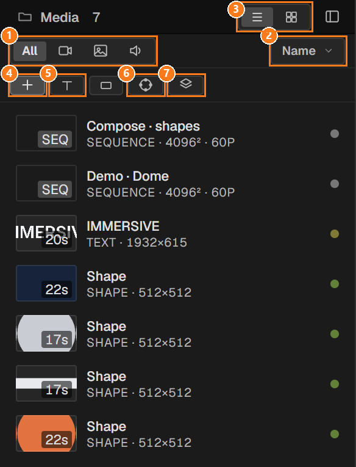
Below the create row, each item shows its name, kind, resolution and duration.
Between Text and Compose, Shape creates a rectangle, ellipse or line with a fill and a stroke.
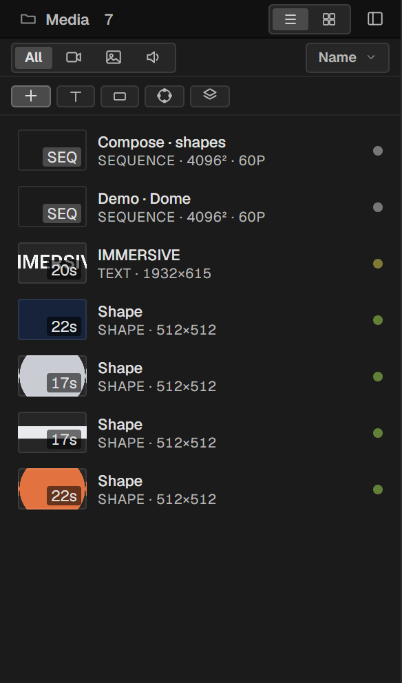
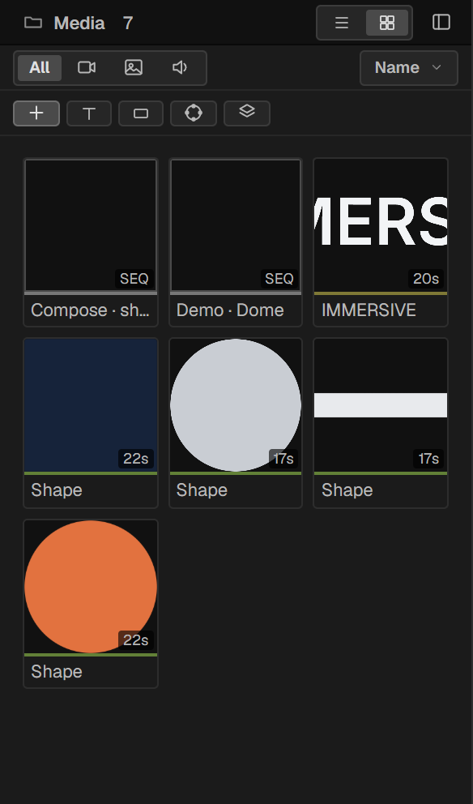
Ctrl+F reveals a text filter in the filter row; Esc closes it.
Right-clicking empty panel space creates a folder. Folders nest and accept colours, and items are dragged between them. Renaming an item, moving it between folders, and creating, renaming or deleting a folder are all undoable.
Clicking selects, Shift+click extends a range, and Ctrl+click adds or removes one item. Multiple selection applies to generating several proxies at once and to building a composition from a set of sources.
The viewer displays the composite master. It has a 2D mode, which shows the master as it will be delivered, and a 3D mode, which shows it mapped onto the dome or room.
When the window is narrow, the bar folds its less-used controls into a … menu.
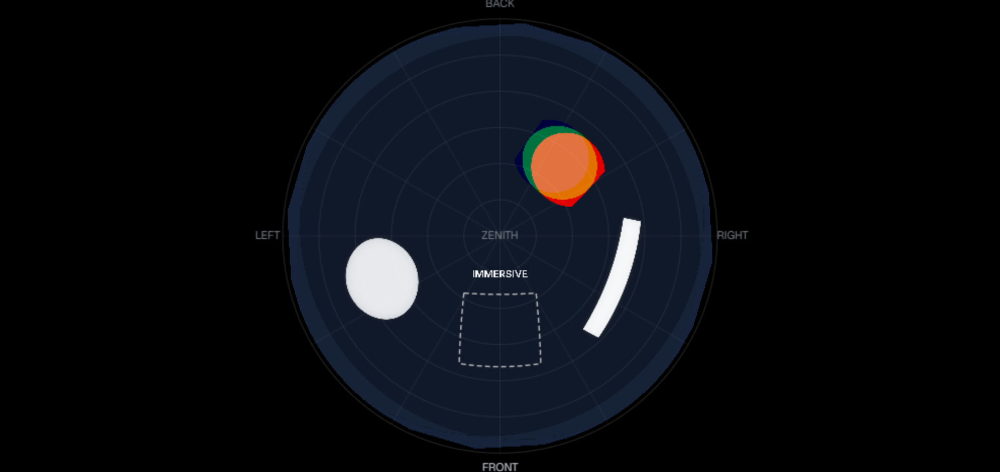
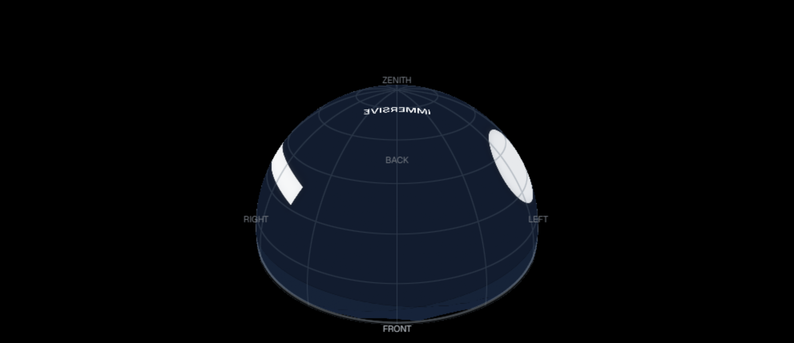
The 2D view serves for framing and delivery. The 3D view shows the shape an audience sees: a clip that reads clearly as a fisheye can be strongly distorted overhead, and the 3D view reveals that. In 3D, Orbit moves the camera freely and Viewer places it where a person stands.
Clips are dragged directly in the viewer: in a dome this moves azimuth and elevation, and in a 2D or room sequence it moves horizontal and vertical position. Point masks are drawn on the viewer canvas as well; chapter 17 describes them.
The dome circle is the picture. Material that appears in the corners of the 2D view lies outside the projected image and is recorded as black, or as transparency when the export carries alpha.
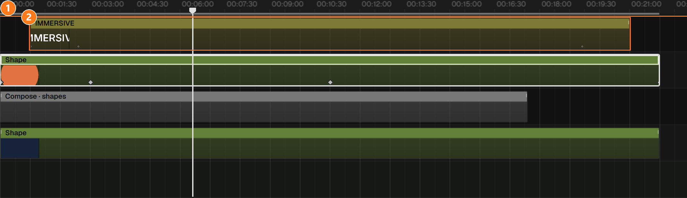
Video tracks stack from the bottom up: a clip on V3 draws over a clip on V1. Audio tracks sit at the foot of the column and carry a subtle tint.
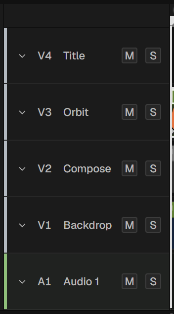
Right-clicking a header adds, duplicates, renames, colours or deletes a track. Dragging a header up or down reorders the tracks. In a room, floor tracks carry a blue-framed tag.
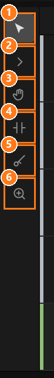
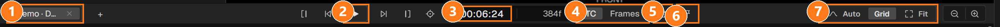
J and L shuttle backwards and forwards; pressing either again gives 2×, 4× and 8×. K stops. ↑ and ↓ jump to the previous and next cut.
With a loop range set, playback started inside the range loops, and playback started outside it runs straight through.
| Zoom | Ctrl+wheel, or + and −. Zooming is anchored to the pointer. |
| Track height | Alt+wheel. |
| Pan horizontally | Shift+wheel, or a horizontal wheel. |
| Scroll vertically | The wheel. |
A vertical bar at the right edge mirrors the horizontal one: its body scrolls and its end caps change the track height.
M drops a marker at the playhead, and , and . jump between markers. A command in the palette detects beats in an audio clip and places markers on them.
The inspector holds the selected clip's parameters in collapsible sections. The sections shown depend on the kind of clip: an audio clip has no Transform, an adjustment layer has no Source.
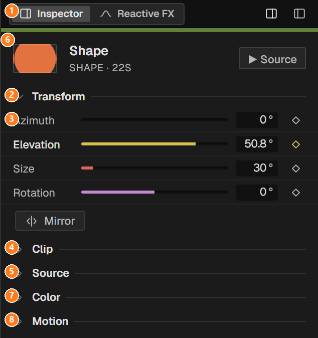
On a parameter that already carries keyframes, changing the value writes a new keyframe at the playhead rather than moving the whole curve. On a parameter without keyframes, the value simply changes.
The top of the inspector shows the clip's thumbnail, name and kind, with a Source button that opens the source monitor on that item.
Whether numbered images form a sequence is decided by the command used, before the file picker opens.
A proxy is a light, all-intra copy of a heavy clip, used while editing. Proxies are generated on request: right-click an item and choose Generate proxy, or select several items first to queue a batch.
With long-GOP camera masters, scrubbing a frame can take over a second. A proxy brings that to a few milliseconds.
Double-clicking a media item, or pressing Source in the inspector, opens the source monitor: a floating player for reviewing material and marking a range.
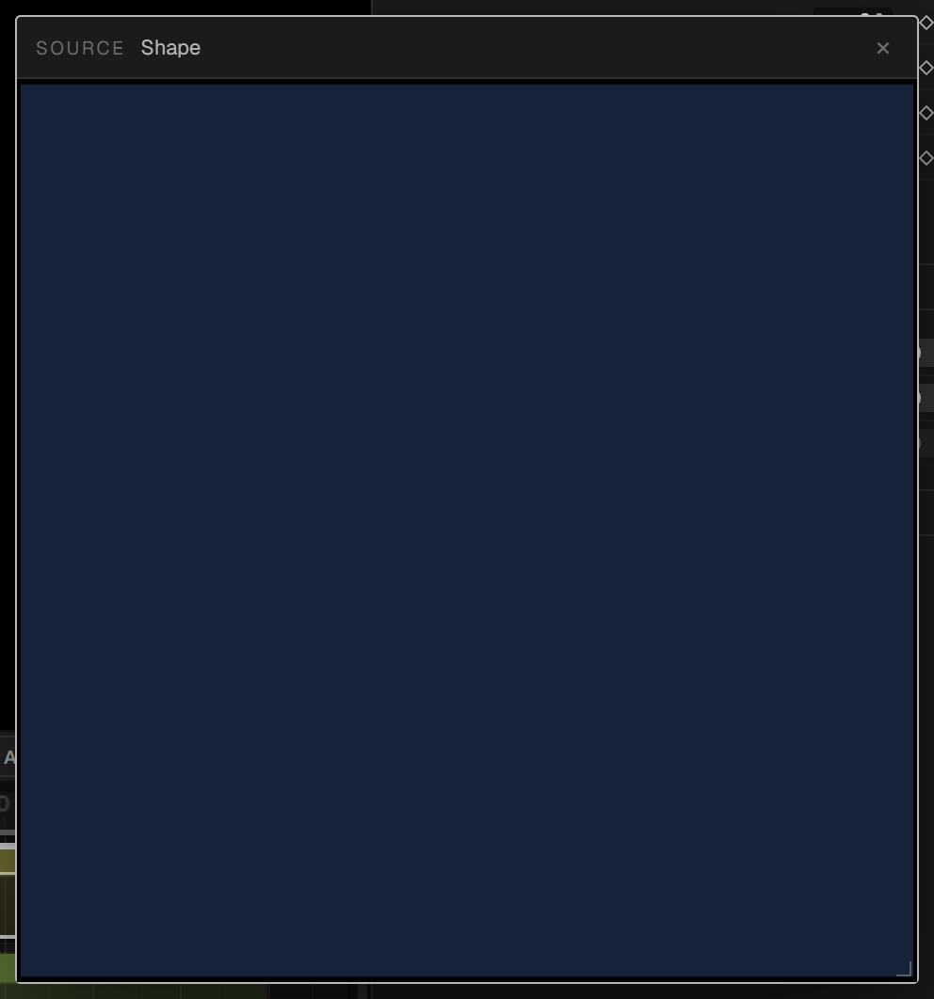
Text items carry font, weight, alignment, fill colour and outline colour, and accept custom font files. They render at a high internal resolution so they stay sharp on a 4K dome; the proportion of the canvas governs the result, so there is no pixel-size field.
Projects are .isp files in JSON, written atomically with a .bak alongside. The program autosaves, keeps a recovery history, and writes incremental versions — _v01, _v02 — from the right-click menu on the Save button.
Dragging a clip anywhere on its body moves it, and a ghost shows the landing position. Alt+drag copies. Linked audio and video move together, and the linked partner is held to horizontal movement so the pair stays on matching tracks.
Dropping a clip on top of another trims the stationary clip, and splits it in two when the new clip lands in the middle. The source file is untouched, and no crossfade is created.
Each clip carries a small handle in its upper corners.
| Razor | B | Clicking cuts. |
| Split at playhead | Ctrl+E | Cuts the selection, or every clip under the playhead. |
| Delete | Del | Leaves a gap. |
| Ripple delete | Shift+Del | Closes the gap. |
Copying takes the whole selection. On pasting, each clip lands on its own track at its original spacing relative to the first, so a multi-layer arrangement returns intact. Linked pairs are relinked when both halves were copied.
Ctrl+Alt+C and Ctrl+Alt+V carry the properties of a clip — transform, looping, speed, colour, masks, effects, motion and all automation — to another clip. This works in both directions between an ordinary clip and a composition.
Identity, position, duration and the media itself stay with the destination, which keeps its place and its length on the timeline. A composition's generating configuration stays with its own composition.
Automation is trimmed to fit. Pasting from a 40-second clip onto a 15-second clip keeps the automation that fits, and inserts the interpolated value at the start when the first surviving keyframe falls later, so the curve begins at the right value.
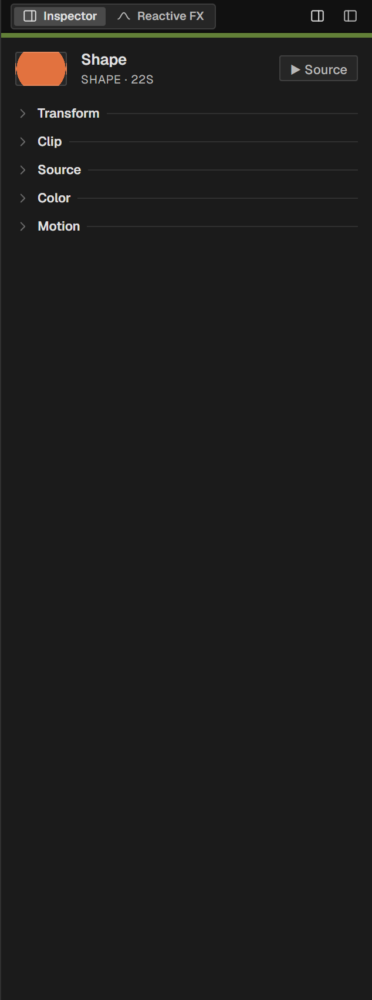
Switching looping off trims the clip to the remaining length of the file. To redefine a cycle, use From clip, which changes the cycle length alone.
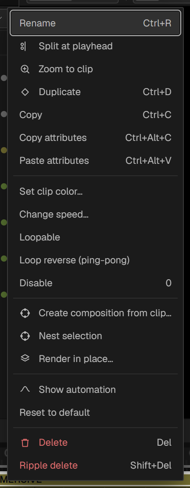
| Azimuth | Bearing around the horizon, in degrees. 0° faces the front of the dome. |
| Elevation | Height above the horizon, in degrees. 90° is the zenith. Negative values place a clip below the horizon, which is projected area in a dome with coverage above 180°. |
| Size | How much of the dome the clip subtends. |
| Rotation | Roll about the clip's own centre. |
| Mirror | Flips the clip horizontally. |
Each value can be dragged, typed, keyframed and animated. Dragging the clip in the viewer moves azimuth and elevation together.
A rectangle placed on a dome becomes a curved quadrilateral, and the effect grows with size and with height. Two consequences follow.
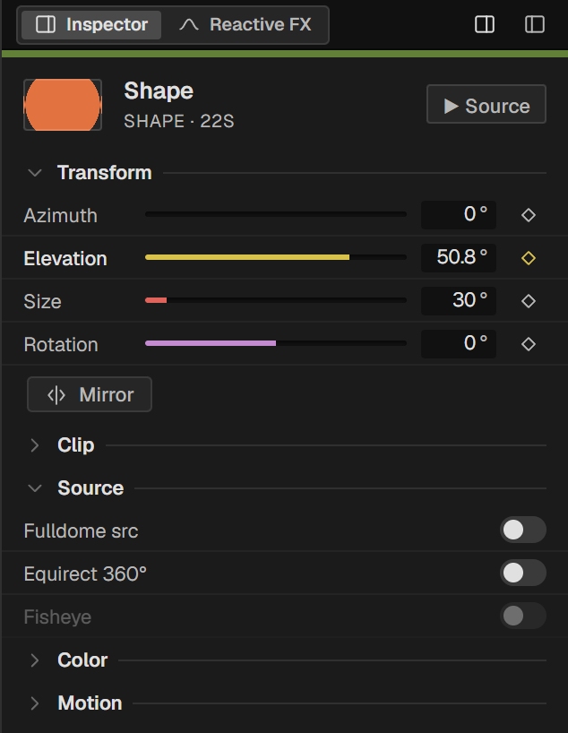
A generated composition covers the whole dome, so its clip arrives with Fulldome src already on. Placement happens inside it, on the elements it contains.
An adjustment layer is a clip with no picture of its own. It applies its effects chain across the full dome to everything composited below it, and carries the complete effects catalogue.
A 2D sequence uses a rectangular canvas. The rest of the program behaves as it does in a dome.
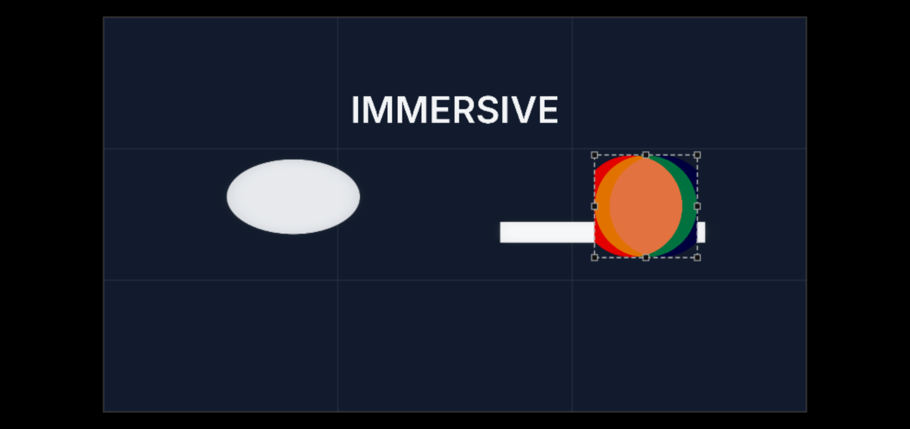
| Transform | X, Y, Scale and Rotation. |
| Source | The dome switches apply to dome sequences. |
| Viewer | The 2D master fills the viewer. |
| Motion presets | Rotate, Pulse, Horizontal, Vertical and Float. |
| Compose | The flat layouts: grid, line, row, column and weave. |
Two parts of the program use flat sequences directly.
Project → New sequence… adds a 2D sequence to a project of any format.
A room treats several projection surfaces as one piece: walls unrolled into a single wide strip, an optional floor, a 3D view from the audience position, and an export that delivers the whole strip or one projector's area at a time.
The room is defined when the project is created, and reconfigured from Project → Room geometry….
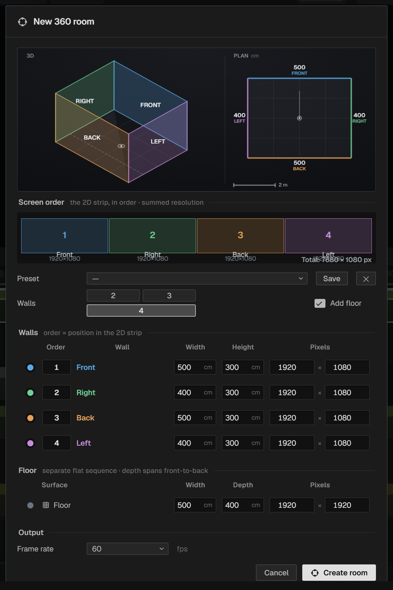
Each wall carries a role — front, right, back, left — a physical width and height in centimetres, and a pixel resolution. The plan preview solves the wall loop into a floor plan and reports geometry that fails to close, or that closes by crossing itself.
Centimetres describe the room; pixels describe the canvas. The strip is measured in pixels, and its width is the sum of the walls' pixel widths. The physical measurements give the 3D view its proportions and derive the floor.
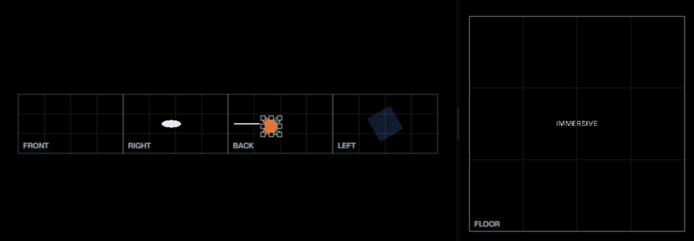
The strip is edited as a 2D canvas: clips take a horizontal position, a vertical position and a scale, and a clip can span a seam and run across two walls. The seams and labels are guides.
Floor content goes on floor tracks, marked by a blue-framed tag in the track header. The floor is a band of the same canvas, so one composite covers every surface.
The content is drawn unshaded, since the view previews what will be projected. The shading visible on the outside belongs to the translucent shell around the room.
| Full strip | The walls as one wide file. |
| Strip + floor | Two files: the wall strip and the floor. |
| Each wall + floor | One file per wall plus the floor, one per projector. Available when the room has a floor. |
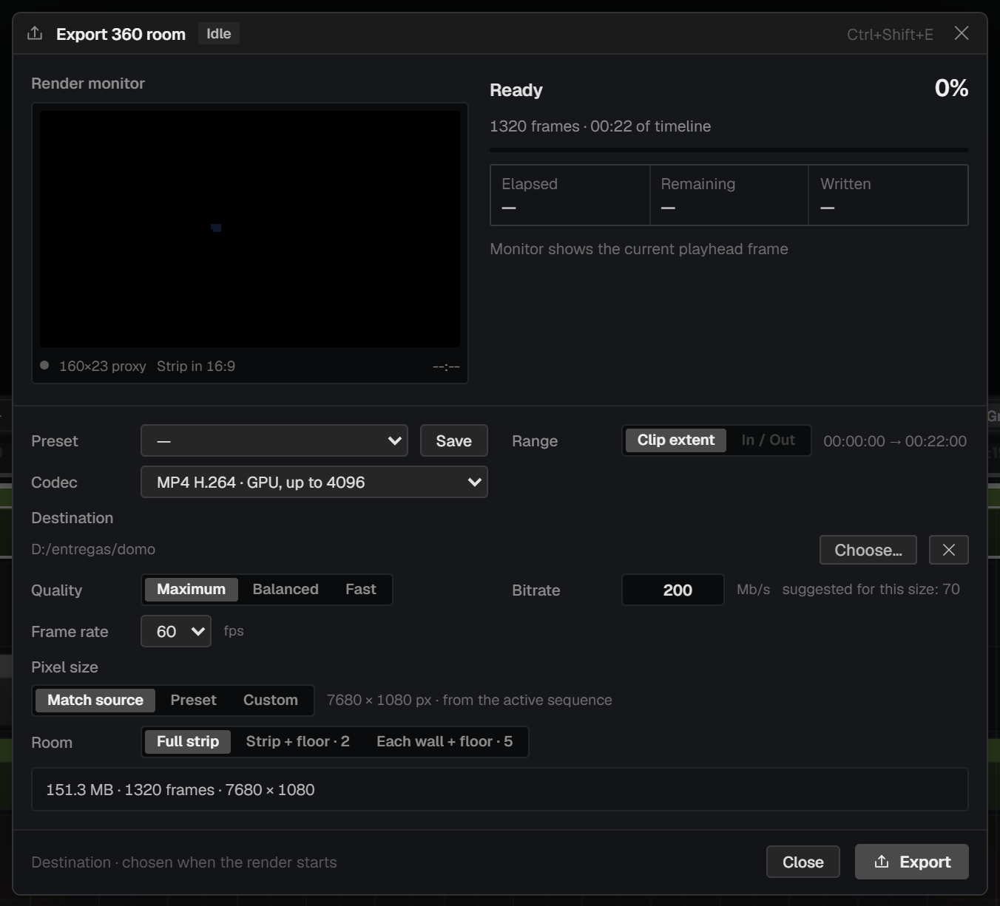
A sequence is a media item, and a media item can be placed on a track. Sequence tabs, nesting and generated compositions all follow from this.
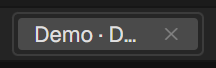
Tabs hold a fixed width so the bar stays still as sequences are renamed. Three are visible at a time and the rest are reached with the wheel over the tabs. Dragging a tab reorders it, and + creates a sequence.
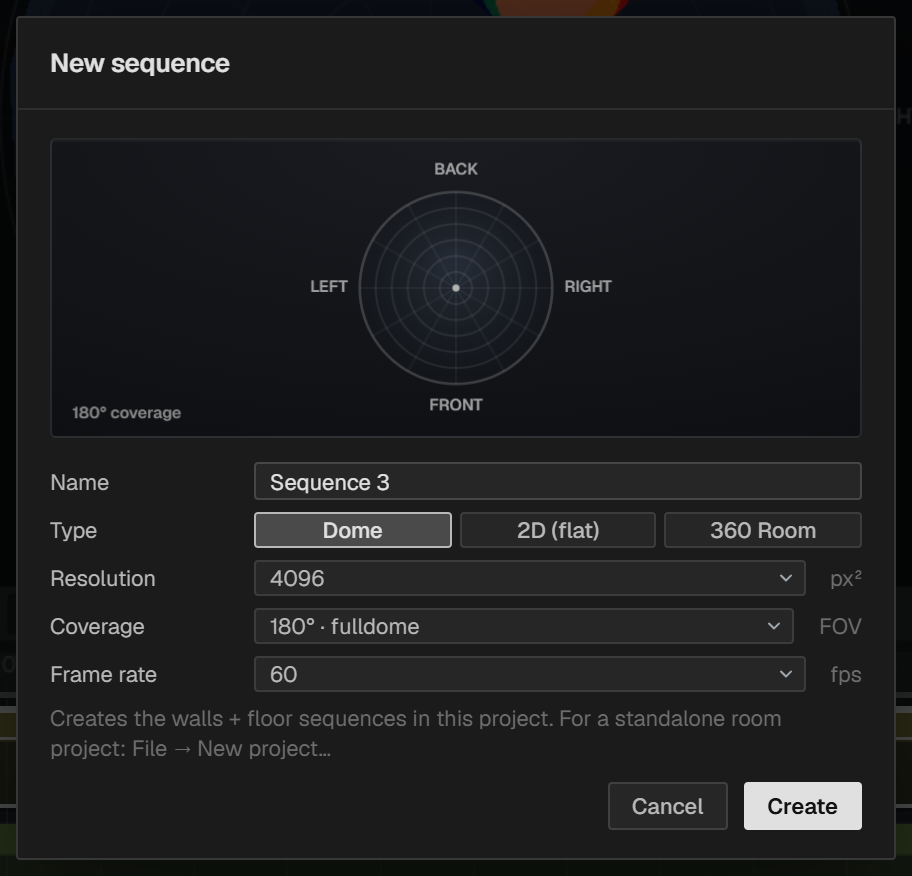
Selecting clips and choosing Nest selection from the Edit menu, or from the clip menu, replaces them with a single clip containing them. Double-clicking it opens its contents, and the tab bar shows the current position.
Sound plays from audio tracks that are visible. A nest containing audio tracks therefore creates a derived audio clip in the parent, linked to the video clip, which moves, trims and unlinks like any A/V pair.
A nest can be cached as a single video, so playback decodes one stream instead of many. The cache renews itself when the contents change.
Render in place… in the clip menu bakes a clip or a nest to a silent MP4 and replaces the timeline instance with the baked file on a new track. A progress view shows the live frame, a bar and an estimate, and offers cancellation.
Compose builds an arrangement out of media items — a ring of clips around the horizon, a tunnel approaching the viewer, woven strips filling the dome — and returns it as an editable nested sequence.
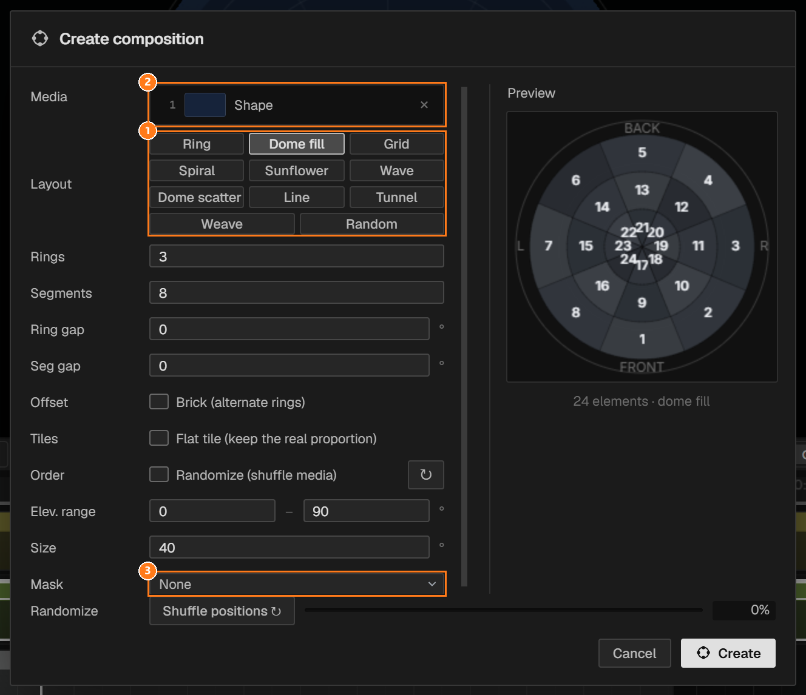
| Type | Result |
|---|---|
| Ring | A circle of clips at one elevation. |
| Dome fill | A grid of rings and segments covering the dome. Tiles keep their proportions. |
| Grid | A rectangular grid. |
| Spiral | A spiral from the zenith outwards. |
| Sunflower | Phyllotactic packing: even coverage with no visible rows. |
| Wave | A wave-shaped band. |
| Dome scatter | Even quasi-random scattering over the hemisphere. |
| Line | A straight line of clips. |
| Tunnel | Elements grow from the centre and pass the viewer. |
| Weave | Interlaced strips travelling endlessly. |
| Random | Random placement with a jitter control. |
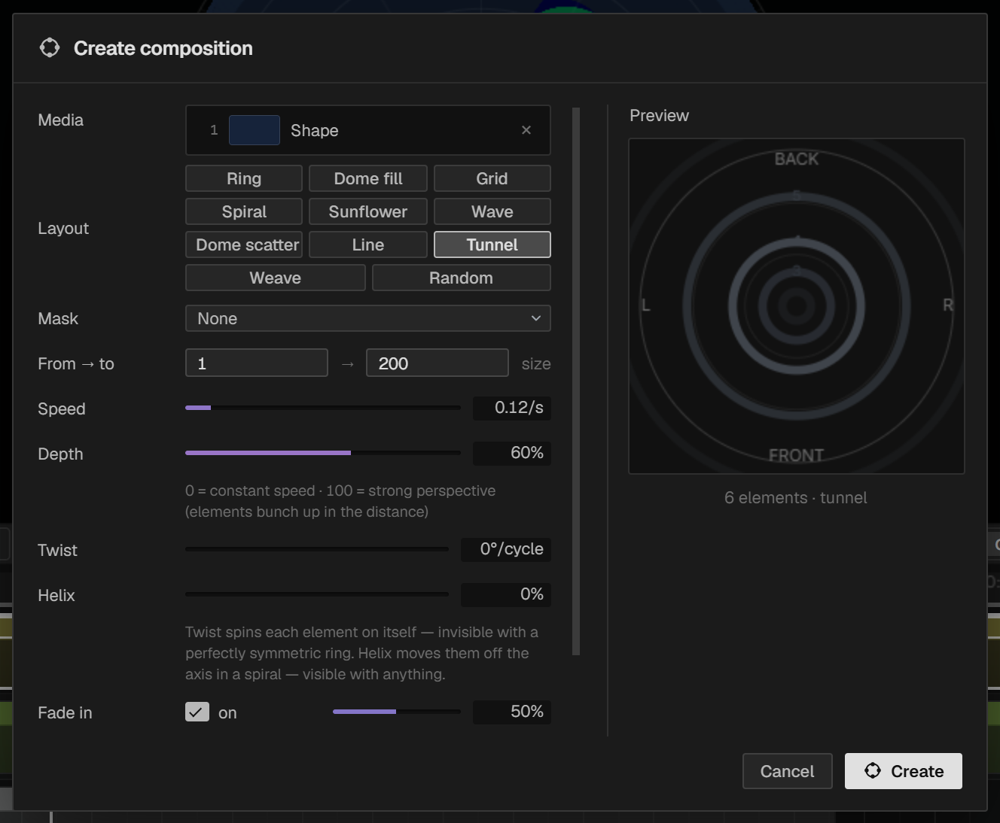
Tunnel sources are 1:1 images with alpha, marked as fulldome, that start small and grow until they leave past the edge of the dome. Any distribution of alpha works; a ring reads as a legible tunnel. Each element is phase-shifted, which makes the stream continuous.
Elements are drawn in depth order every frame, since their ranking by nearness rotates as they cycle.
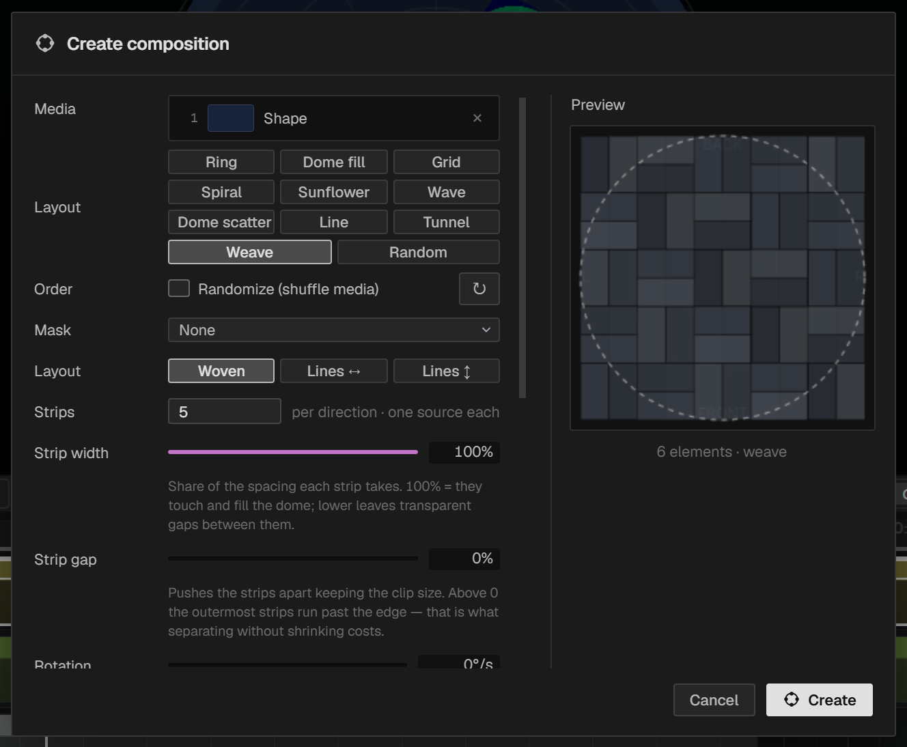
Weave keeps its sources undistorted: the side that crosses a strip takes the strip's thickness, and the other follows the media's proportions. Each strip uses one source. The interlacing is decided per crossing, so the pattern stays still while the strips flow through it.
Two surfaces edit the same values.
The composition is a nest, so its contents can also be opened and moved by hand. Manual changes survive regeneration.
A composition lands on the nearest track with a free gap for its duration, measured from the selected track header, or from the bottom when no track is selected. A new track appears only when no existing track has room.
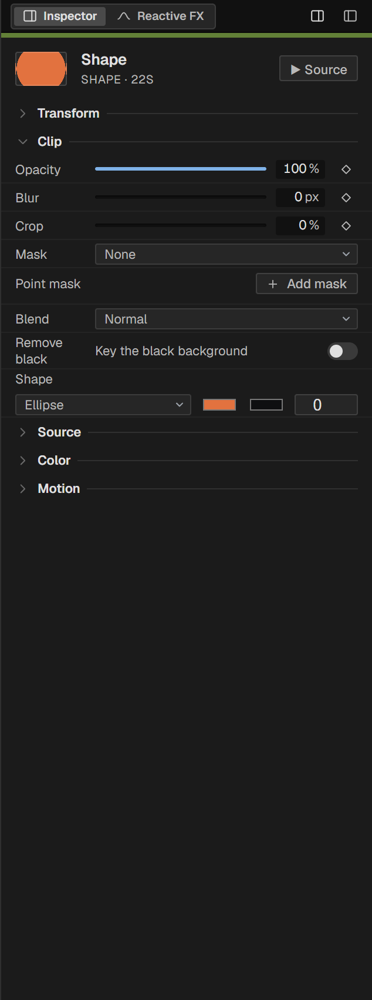
| Opacity | 0 % to 100 %. |
| Blur | In pixels. |
| Crop | Trims the edges of the source. |
| Mask | A shape or an image mask. |
| Point mask | Add mask begins a drawn mask. |
| Blend | Normal, Add, Screen, Multiply, Darken, Lighten. |
| Remove black | Keys out a black background, for footage delivered without alpha. |
The Mask menu offers Circle, Rounded, Diamond and Vignette, and Custom takes a PNG as a matte. A size control scales the mask and a feather softens its edge.
Add mask draws a mask by clicking points directly on the viewer canvas. A clip can carry several, each with its own invert and feather, which isolates part of a shot rather than cutting it to a geometric shape.
Effects appear in the Effects section of the inspector and in the Reactive FX tab, which show the same chain. Add Effect adds one, dragging reorders, the power button switches one off, and the bin removes it.
Every effect parameter accepts keyframes, and every effect accepts audio drive. Chapter 20 covers the audio side and chapter 28 lists all 26 effects with their parameters.
To treat the whole picture rather than one clip, use an adjustment layer, created from Adjust in the media panel or from Add Adjustment Layer in the Reactive FX tab.
Colour is set per clip and runs in the shader, so it applies identically in the viewer, the live outputs and the export.
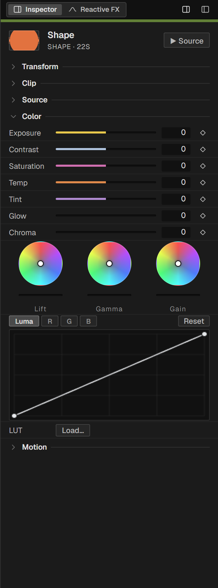
| Exposure | Overall brightness. |
| Contrast | |
| Saturation | |
| Temp | Warm to cool. |
| Tint | Green to magenta. |
| Glow | A soft bloom around highlights. |
| Chroma | Chromatic aberration. |
Each slider accepts keyframes.
The three wheels form a primary grade: Lift for shadows, Gamma for midtones, Gain for highlights. Dragging inside a wheel pushes the colour, and the bar beneath it sets the level.
A tone curve with Luma, R, G and B channels. Clicking adds a point, dragging shapes the curve, and Reset straightens it.
LUT → Load… imports a .cube 3D LUT and applies it per clip as the final step of the colour chain. A look developed in a grading application travels this way.
A dome is a large, close, curved surface. Material judged on a monitor often reads brighter in the venue, so exposure decisions hold better when made on the dome itself, or at least in the 3D view.
Movement comes from two mechanisms. Motion is procedural: endless, parameterised, with no keyframes. Automation is keyframed: exact values at exact times. They stack, and a mix control balances them.
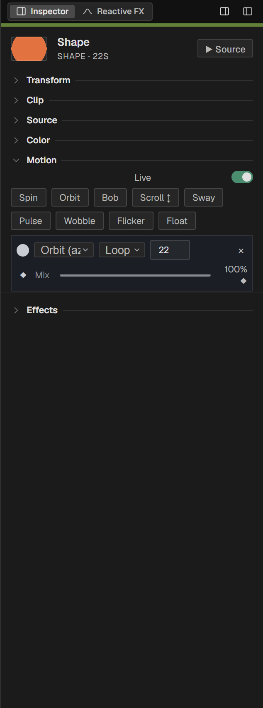
Clicking a preset chip adds a modifier. A preset stamps ordinary modifiers into the list, which are then retuned, switched off or deleted individually.
| Preset (dome) | Parameter |
|---|---|
| Spin | Rotation about the clip's centre. |
| Orbit | Azimuth. |
| Bob | Elevation, back and forth. |
| Scroll ↕ | Elevation, continuously. |
| Sway | Azimuth, back and forth. |
| Pulse | Size. |
| Wobble | Roll. |
| Flicker | Opacity. |
| Float | A chord of three modifiers. |
A 2D or room sequence offers Rotate, Pulse, Horizontal, Vertical and Float.
Float is a chord rather than a single parameter: horizontal drift, vertical drift and a gentle roll, out of phase with one another. Its three modifiers carry periods of 11, 14 and 18 seconds, which share no common multiple, so the combined path does not repeat. A master Intensity control from 0 % to 300 % scales the chord and preserves values retuned by hand.
In a dome, Float uses the slide parameters rather than azimuth and elevation, since one degree of azimuth covers less ground near the zenith than at the horizon.
Every parameter row carries a diamond, which sets a keyframe at the playhead and removes it when already filled. Once a parameter carries a keyframe, editing its value writes another one at the playhead.
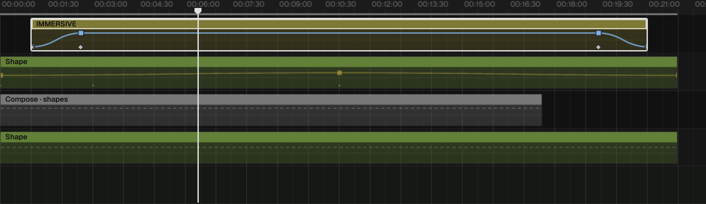
Each track shows one parameter's curve, chosen by two chips in the track header: the left chip picks the category or device — Transform, Clip, Color, or any Motion or Effect in use — and the right chip picks the parameter. A ◆ marks what is already automated. Touching a parameter in the inspector brings its curve into view.
Each Motion modifier carries a Mix from 0 % to 100 %, and the mix accepts keyframes. A procedural drift can therefore fade in and out across a scene while keyframes handle the composition underneath.
A parameter can also be driven by a stack of modulation layers — LFOs, audio followers and spatial functions — from the modulation panel, which suits a value that wanders rather than arrives.
The second inspector tab holds an audio analysis engine and the effects chain its output can drive.
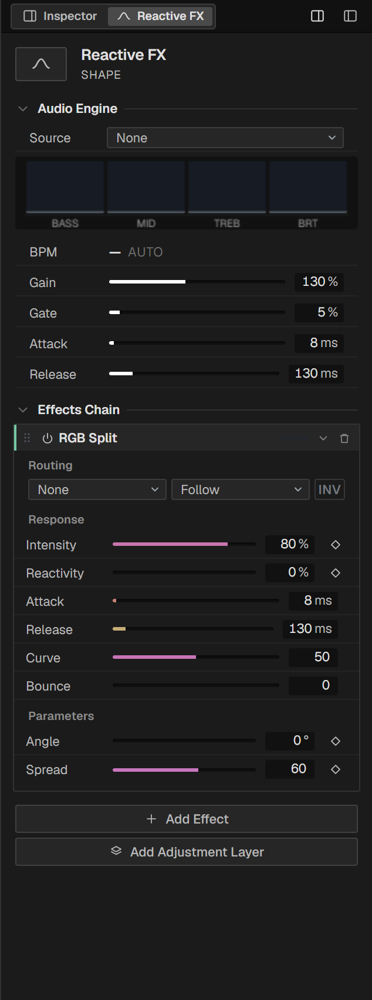
| Source | The audio that drives the analysis. |
| Band meters | BASS, MID, TREB and BRT: live levels for three frequency bands and overall brightness. |
| BPM | Detected tempo, or a value set by hand. |
| Gain | Input level into the analysis. |
| Gate | The threshold below which the picture holds still. |
| Attack / Release | How quickly the follower rises and falls, in milliseconds. These are the engine defaults, which each effect can override. |
Each entry carries a power button, a name, a collapse arrow and a bin, and expands into three groups.
| Intensity | The effect's overall strength. Accepts keyframes. |
| Reactivity | How much of that strength the audio controls. At 0 % the effect holds static. |
| Attack / Release | Per-effect override of the engine timings. |
| Curve | Shapes the response, from linear to sharply exponential. |
| Bounce | Adds overshoot, so a hit springs past its target and settles. |
The effect's own controls, each with a keyframe diamond. Chapter 28 lists them for all 26 effects.
Setting the look with Intensity first, and then raising Reactivity, gives a predictable result.
The program plays a mix, places and trims it, and drives the reactive engine from it.
Audio tracks sit at the foot of the track column and carry a subtle tint in the header and the row. Audio clips trim, move and fade like any other clip, and the waveform is drawn at screen resolution for the visible span.
Audio fades use the clip's corner handles, and the fade is the volume.
Video imported with sound arrives as a linked pair, which moves and trims together. The clip menu unlinks them.
A command in the palette detects beats in an audio clip and places locators on them, which then serve as snap targets.
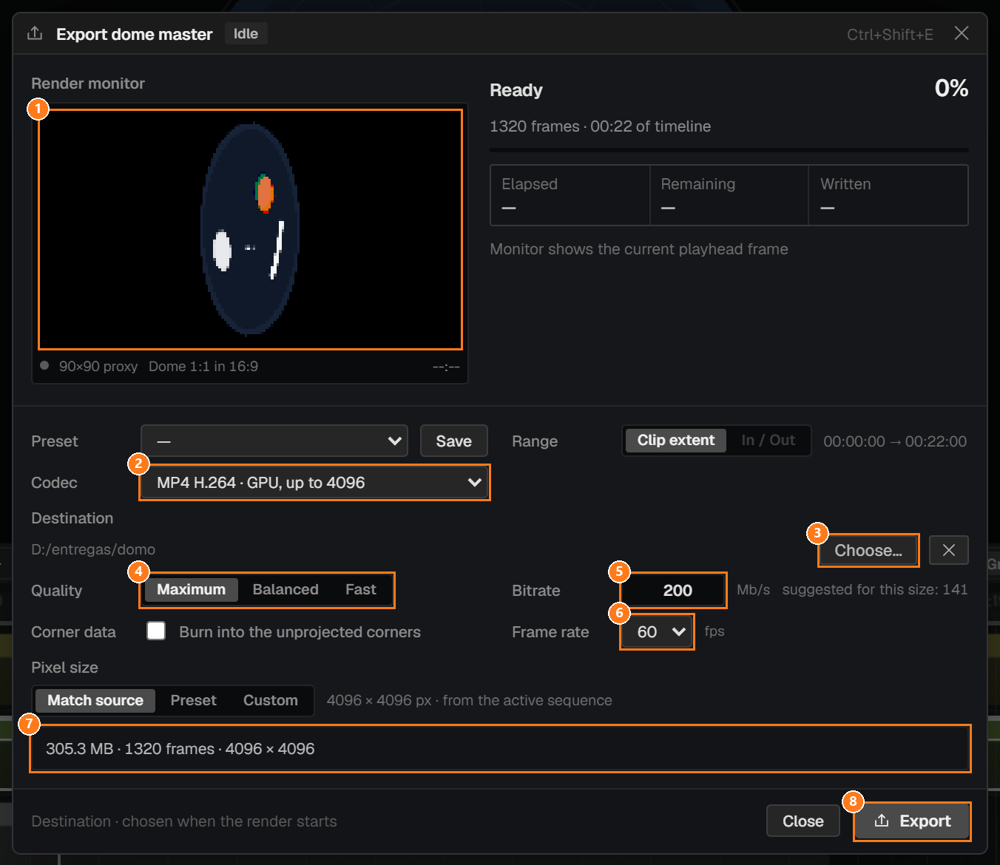
Above these, Range selects Clip extent or the marked In / Out range, and Pixel size takes the dimensions from the sequence with Match source, from a preset, or from typed values.
| Codec | Maximum size | Use |
|---|---|---|
| PNG sequence · lossless | — | Mastering and archival, with or without alpha. Without alpha the background is black and the result stays lossless. |
| MP4 H.264 · GPU | 4096 × 4096 | A 4K dome master. |
| MP4 H.265 · GPU | 8192 × 8192, 10-bit | Large formats, wide room strips, and 10-bit material. |
| MP4 · H.264 | 3072 × 3072 | The built-in encoder. |
| MP4 · H.265 | 1080 × 1080 | The built-in encoder. |
| MOV · HAP / HAP Q | — | Playback systems that use HAP. Large files, very cheap to decode. |
| Still frame · PNG | — | A single frame. |
The two H.264 entries use different encoders. The entries marked GPU use the graphics card's hardware encoder and reach dome resolutions. The other two use the built-in encoder, which reaches 3072 × 3072 for H.264 and about 1080 × 1080 for H.265.
For a 4096 × 4096 master, 150 to 250 Mb/s at Maximum covers delivery. Bit depth offers 10-bit on H.265, which suits the large smooth gradients that appear across a dome.
Save beside the Preset menu stores a configuration for reuse — one per venue, for example.
Jobs run one at a time. A room export in Each wall + floor mode queues one job per surface. Elapsed, remaining and written counters sit beside the render monitor.
A 4096 × 4096 export is a long operation. Running it for a minute, stopping, and opening the file in the player that will be used confirms the settings before the whole piece is committed.
A dome master is a circle inside a square, which leaves four corners outside the projected area. Corner data places identification there: title, author, and a running timecode.
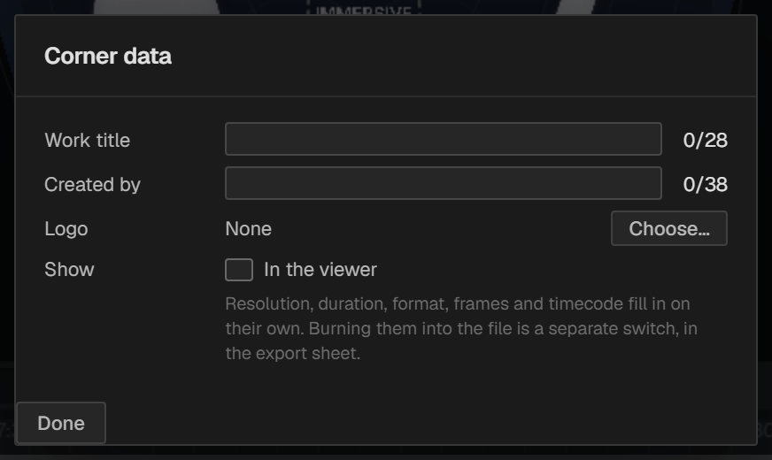
| Bottom left | The title of the work, in large type. |
| Bottom right | Timecode and frame count, advancing with the export. |
| Top left | A logo image. |
| Top right | Creator, resolution, duration and format. |
Window → Show corner data draws it in the viewer, as a view setting. Corner data → Burn into the unprojected corners in the export sheet records it into the file. The two switches are independent: an exported master carries corner data when the export switch asks for it.
The composite master can be broadcast while work continues, which drives a dome during a rehearsal or feeds a media server.
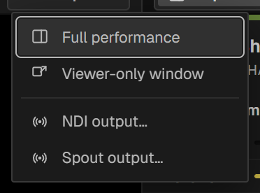
| Full performance | The viewer occupies the whole window. |
| Viewer window | A second window for another display, showing the complementary view. |
| NDI | Broadcasts the clean master over the network to any NDI receiver. |
| Spout | Shares the master with another application on the same Windows machine, GPU to GPU. |
The broadcast carries the clean master: guides, overlays and corner data stay in the editor.
A live NDI stream can be added as a media item and used as a clip, which brings in a live camera or another machine's output.
NDI requires its runtime, and the program offers a link to it when it is absent. Spout runs on Windows.
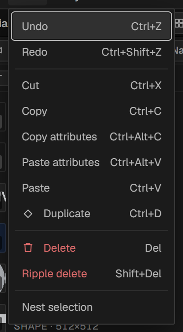
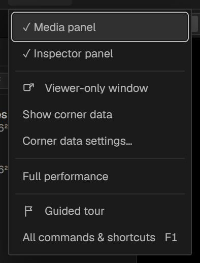
| New project… | Ctrl+N | Opens the start screen; the current project stays open behind it. |
| Open… | Ctrl+O | Opens .isp, and .ise and .rdome from earlier versions. |
| Save | Ctrl+S | |
| Save As… | Ctrl+Shift+S | |
| Export… | Ctrl+Shift+E |
| Undo / Redo | Ctrl+Z | |
| Cut | Ctrl+X | |
| Copy / Paste | Ctrl+C · Ctrl+V | Operates on the whole selection. |
| Copy attributes | Ctrl+Alt+C | Chapter 11. |
| Paste attributes | Ctrl+Alt+V | |
| Duplicate | Ctrl+D | |
| Delete | Del | Leaves a gap. |
| Ripple delete | Shift+Del | Closes the gap. |
| Nest selection | Chapter 15. |
| Sequence settings… | Resolution, frame rate, dome coverage. | |
| Dome coverage (FOV)… | Dome sequences. | |
| Room geometry… | Room sequences. Reconfigures the active room. | |
| New sequence… | Dome, 2D or 360 Room. | |
| Preferences… | Ctrl+, |
| Media panel | Shows or hides it. | |
| Inspector panel | Shows or hides it. | |
| Viewer-only window | Second window, complementary view. | |
| Show corner data | Draws it in the viewer. | |
| Corner data settings… | Title, author and logo. | |
| Full performance | Viewer fills the window. | |
| Guided tour | Restarts the tour. | |
| All commands & shortcuts | F1 | The command palette. |
On macOS, Ctrl means ⌘. The complete list is available in the program with F1.
| Type | Parameters |
|---|---|
| Ring | Count, elevation, size, ring radius. |
| Dome fill | Rings, segments, ring gap, segment gap, offset, tiles. |
| Spiral | Count, turns, size. |
| Sunflower | Count, size. |
| Wave | Count, amplitude, frequency. |
| Dome scatter | Count, size, jitter. |
| Random | Count, size, jitter. |
| Tunnel | Count, from, to, speed, depth, spin, helix, fade in, fade out. |
| Type | Parameters |
|---|---|
| Grid | Columns, rows, gap. |
| Line | Count, spacing, angle. |
| Row / Column | Count, spacing. |
| Weave | Layout, strips, strip width, packing, long side, direction, speed per family, order. |
| Media | The basket: which sources, and in what order. |
| Mask | Shape and size, 0 % to 100 %, applied to every element. |
| Order | Shuffles which source goes where. |
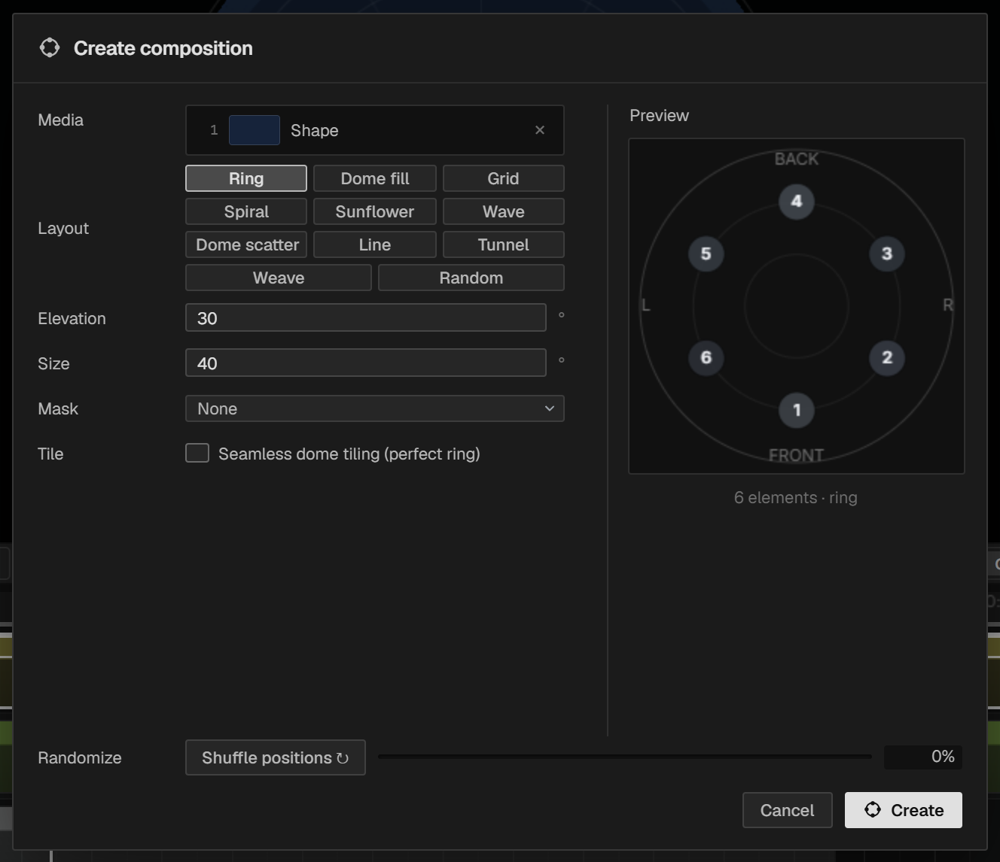
Twenty-six effects, grouped by family. Every parameter accepts keyframes, and every effect accepts audio drive from the Reactive FX tab. Effects marked feedback read the previous frame, so their result builds over time.
Save diagnostics log… in the command palette writes a log describing the environment and recent activity.